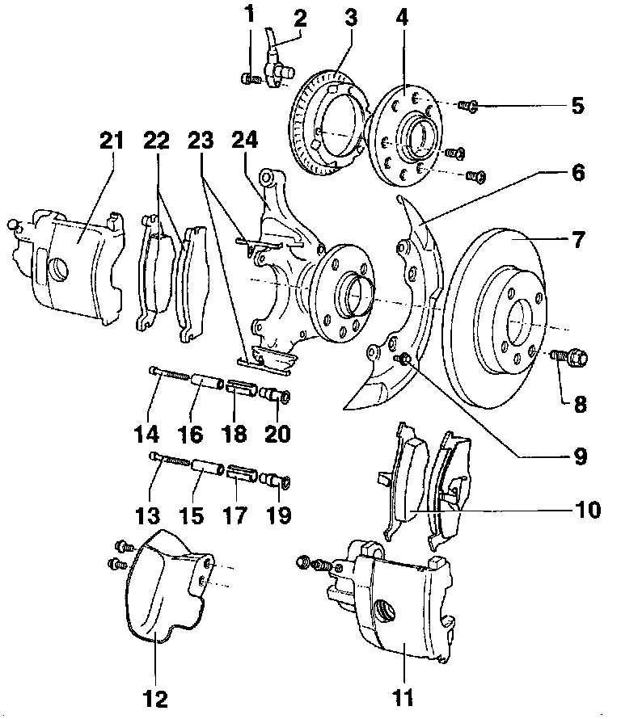
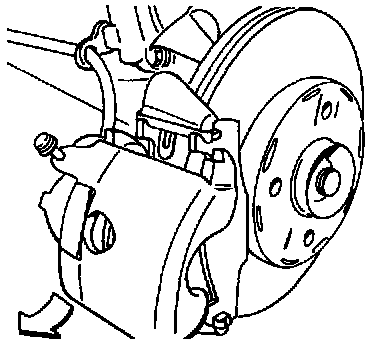
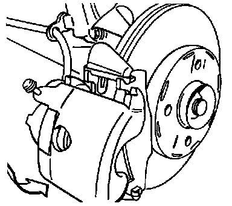

VW II Caliper
VW II Caliper:

Component Notes And Information
NOTE:
^ During removal and installation procedures, refer to the component location illustration above and component notes below.
^ Separate connector for brake pad wear indicator.
^ To prevent brake fluid spillage draw the brake fluid from the reservoir using a bleeder bottle that is used ONLY for brake fluid.
WARNING: Brake fluid is poisonous and must NEVER be removed by siphoning with your mouth.
CAUTION: After servicing caliper, depress brake pedal firmly several times to seat the pads in their normal operating position.
1. Bolt
- Tighten to: 10 Nm (7 ft lb)
2 ABS wheel speed sensor
- Before inserting sensor, clean fitting hole inner surface and coat with lubricating paste G 000650
3 ABS wheel speed sensor rotor
4 Wheel hub
- Pressing in and out, refer to Steering and Suspension
5 Screw
6 Splash shield
7 Brake disc
- Thickness: 12 mm (0.472 inch)
- Wear limit: 10 mm (0.394 inch)
- When worn always replace both front discs
- Use penetrating oil to loosen discs from wheel hub if necessary; do not use force to remove discs
8 Wheel bolt
- Tighten to: 110 Nm (81 ft lb)
9 Bolt
- Tighten to: 10 Nm (7 ft lb)
10 Brake pads
- For vehicles as of model year 1996 (T)
- Thickness: 14 mm (0.551 inch)
- Wear limit: 7 mm (0.276 inch)
- Pad with larger friction area installed on outside
- Always replace both pairs at the same time
- Removing and installing, refer to procedure below
11 Brake caliper
- For vehicles as of model year 1996 (T)
CAUTION:
^ Do not disconnect the brake hose from the caliper when replacing brake pads.
^ Do not allow the caliper to hang by the brake hose. The unsupported weight can stretch and damage the hose.
12 Air deflector plate
13 Socket-head bolt, lower
- Tighten to: 25 Nm (18 ft lb)
14 Socket-head bolt, upper
- Tighten to: 25 Nm (18 ft lb)
15 Lower spacer sleeve
16 Upper spacer sleeve
17 Lower sleeve
18 Upper sleeve
19 Lower bushing
20 Upper bushing
21 Brake caliper
- For vehicles up to model year 1995 (S)
22 Brake pads
- For vehicles up to model year 1995 (S)
- Thickness: 14 mm (0.551 inch)
- Wear limit: 7 mm (0.276 inch)
- Pad with larger friction area installed on outside
- Always replace both sides
- Removing and installing, refer to procedure below
23 Brake pad retaining spring
- For vehicles up to model year 1995 (S)
- Mount in position before installing brake pads, refer to procedure below
- Replace when replacing pads
24 Wheel bearing housing
Up To Model Year 1995
Removal

- Remove bolts securing caliper to wheel bearing housing.
- Swing caliper out from bottom to top.
CAUTION:
^ Do not allow the caliper to hang by the brake hose. The unsupported weight can stretch and damage the hose.
^ Do not disconnect the brake hose from the caliper when removing brake pads.
- Remove brake pad retaining springs and brake pads.
Installation
WARNING: Brake fluid is poisonous and must never be extracted by mouth through a hose.
CAUTION:
^ Extract part of the brake fluid from the brake fluid reservoir before pushing back the pistons.
^ Use the bleeder battle or a plastic bottle, which is used only for brake fluid, for extracting the fluid.
^ If this is not done, particularly if the brake fluid has been topped up in the meantime, brake fluid may How out and cause damage.
- Push piston into caliper.

- Install inner brake pad and pad retaining springs on wheel bearing housing.
- Install outer brake pad.

- Install brake caliper only as far as necessary to start bolts.
NOTE: The brake pad retaining springs could be bent if the caliper is pushed on too far. Bent brake pad retaining springs can cause noise during braking.
- Tighten caliper mounting bolts.
Tighten to: 25 Nm (18 ft lb)
- Depress brake pedal firmly several times to seat brake pads in their normal operating position.
- Refill reservoir only to MAX mark (if necessary).
From Model Year 1996
Removal

- Remove both guide pins from brake caliper.
- Remove brake pads.
CAUTION:
^ Do not allow the caliper to hang by the brake hose. The unsupported weight can stretch and damage the hose.
^ Do not disconnect the brake hose from the caliper when removing brake pads.
Installation
CAUTION:
^ Extract part of the brake fluid from the brake fluid reservoir before pushing back the pistons.
^ Use the bleeder bottle or a plastic bottle, which is used only for brake fluid, for extracting the fluid.
^ If this is not done, particularly if the brake fluid has been topped up in the meantime, brake fluid may flow out and cause damage.
WARNING: Brake fluid is poisonous and must never be extracted by mouth through a hose.

- Press piston back into caliper.
- Install brake pads.

- Locate lower brake caliper (arrow).
- Install brake caliper with brake pads.
Brake caliper lug (arrow) must be behind the wheel bearing housing guide
- Install guide pins into brake caliper.
Tighten to: 25 Nm (18 ft lb)
- Depress brake pedal firmly several times to seat brake pads in their normal operating position.
- Refill reservoir only to MAX mark (if necessary)